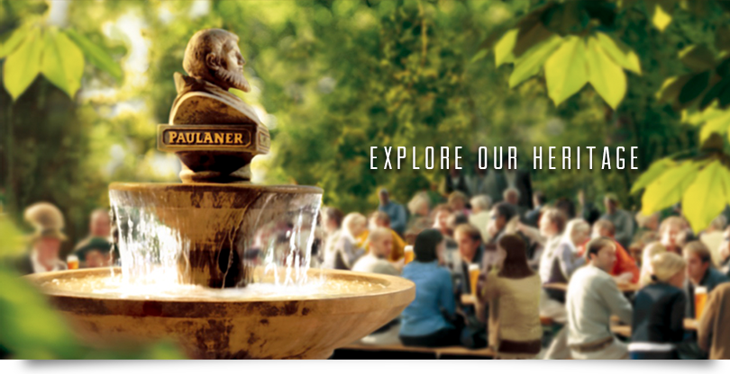
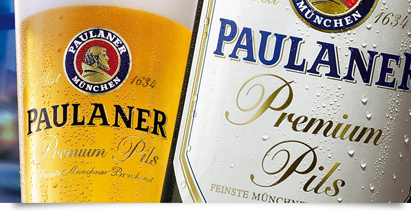
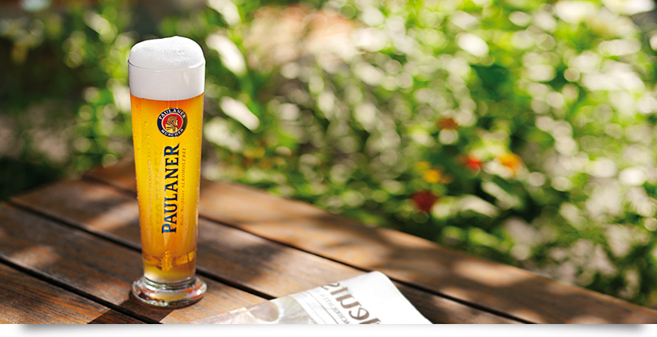
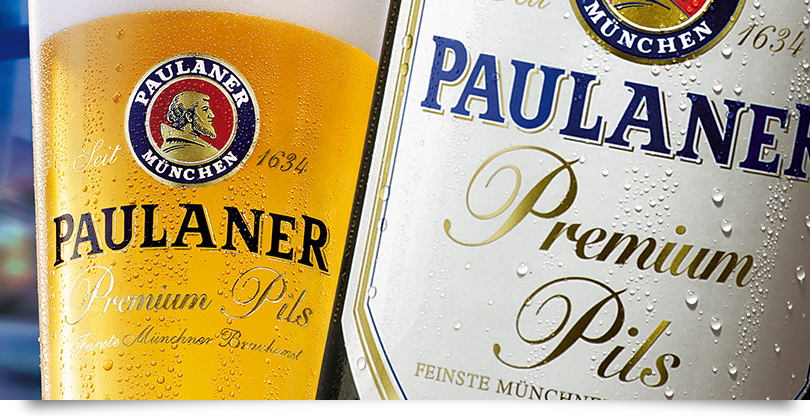
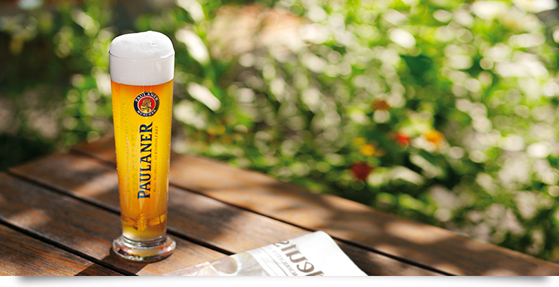

Description: Consistently considered one of the best wheat beers in the world, this traditional Bavarian Hefe-Weizen promises a delightful drink the whole way through.
Tasting Notes: Mild and fruity with a very subdued clove aroma. The pleasant, unobtrusive sweetness is just strong enough to support the beer's fruity undertones. You have to look really hard to find some bitterness. All that can be felt is a mere hint at the top of the palate. 5.5% ABV.
Food Pairings: Pairs especially nice with German cuisine; cheese (tangy Brick, Edam, and Feta); salads (tangy Asian, blue cheese, chicken); meat (roasted chicken, sausage, pork chops, seafood and shellfish); and finally a perfect fit for pizza.
Description: The Paulaner Original Munich Lager is credited as being the first Munich Lager. With its sweet honeyed raisin nut bread aromas it is no wonder this is the most popular Munich Lager.
Tasting Notes: Sweet lemon, tangerine, toast, and golden raisin flavors. Light to medium bodied. 4.9% ABV.
Food Pairings: Pairs well with sausages, spicy foods, especially Mexican dishes, pastas, and pizzas.
Description: Clear, deep amber with an orange cast, topped by a cream colored head that holds well. Dark toffee notes are revealed with an underlying fruitiness that includes apple, grape, and plum.
Tasting Notes: The finish is dry with a lightly lingering spicy hop. Very well balanced, alternating between a light sweet malt and a crisp bitterness. Medium strength. 5.8% ABV.
Food Pairings: Pairs well with Käse-spätzle, potato salads, various foods with tomato sauce, Mediterranean cuisine and for dessert, plum cake.
Description: The majestic golden color is the first hint that one must try this beer. Earthy aromas of barley and yeast eases you into the centuries old art of German brewing. Highly drinkable and once only available in the tents of Munich Oktoberfest one can now enjoy the tradition of Oktoberfest in their own home.
Tasting Notes: A large frothy head, low bodies with a nice mouth-feel; there is an overwhelming sweetness. A medium bitterness, but mellow enough to make it highly drinkable. 6.0% ABV.
Food Pairings: Traditional Oktoberfest foods pair well with this; HendIn, Schweinshaxen, bratwurst, grilled chicken, pork knuckles, oxen and giant pretzels.
Description: The founding beer of Paulaner, "Salvator", unites the finest hops and dark barely malt. The Paulaner monks served "Salvator" as a replacement for food during Lent. It's original recipe is today almost the same as it was back in 1773.
Tasting Notes: Very smooth, strong malty caramel flavor that brings out the toasted character. The alcohol comes to play on the finish. 7.9% ABV.
Food Pairings: Pairs best with sausages, schnitzels, and cheeses such as Gruyere or smoky Gouda.
Description: A traditional German pilsner, crisp and refreshing with a stiff foamy head.
Tasting Notes: A light, crisp taste and a traditional hoppy finish. Mild, yet dry. 4.9% ABV.
Food Pairings: Pairs well with roasted meat, chicken, and fish. It also goes well with spicy Indian or Mexican dishes as well as most Asian cuisines.
Description: This beer has as distinctive and very recognizable fragrance, which has been expertly mingled with hops.
Tasting Notes: Once you know it you can smell that it is a non-alcoholic beer, but because of the aromatic hop, which has obviously been used here, a beautiful aroma envelops the nose; fresh hay and herbs. The first mouth full reveals the hop, and the beer is quite strong. Furthermore, it carries a slight roasting overtone, most likely from the yeast.
Food Pairings: Pairs well with sausages, spicy foods, especially Mexican dishes, pastas, and pizzas.
 


